Station · the RSI pane is now the Indicator Lab's RSI-only visual
Branch station/rsi-only-20260929, built on today's live Station (80de2d8). Not pushed, not deployed. It follows the Lab's handoff of 29 Sep ("HERE IS INSTRUCTIONS FOR THE UPDATED RSI ONLY OSCILLATOR FOR OUR USE IN STATION PLEASE"). It was checked in a hidden browser against the chart API at 08:23–08:28 UTC on 30 Sep (04:23–04:28 New York, before the open).
In one line: the pages that carry the RSI (SPY + QQQ, SPY + QQQ · DAY, OTHER INDEXES · RSI, TARGETS · RSI, INTRADAY · 30M, FOCUS 2, INTERNALS) now draw one pink family. There are five dotted fast lines, one thick solid daily line and a pink slow cloud. The scale is fixed at 0 to 100. The daily reading, for example RSI D 49.2, sits on a small tag next to the line's last value. The numbers are the same numbers as before. We checked them one by one against the chart API: same bars, same timestamps, and differences of zero.
What the pane shows
Six lines. 3H, 4H, 6H, 8H and 12H are thin dotted pink lines. Each slower one is slightly more solid (54%, 57%, 60%, 63%, 66%). The daily line is solid, three times as thick, at 90%. There is no monthly line, no signal line and no 2H (the 2H stays off, as in the Lab).
The slow cloud is a muted pink band at 30%. At every bar it runs from the lowest to the highest of the 2-day, 3-day, weekly and 2-week RSI. It uses the four raw values, not an average. If any one of the four is missing at a bar, the cloud is not drawn there, and the top-left row says so: for example CLOUD HIDDEN · W missing.
Guides. Solid pink lines mark 30 and 70. The 50 line is dotted and faint, and 0 and 100 are barely visible. The scale is always 0–100, so a reading of 60 sits at the same height on every chart.
The daily tag ("RSI D 49.2") sits a few pixels right of the daily line's newest point, with a short pink connector line. It never floats out into empty future space. If there is no room, it moves and the connector still points to the exact value. It hides while you are scrolled back in history.
Drawing order: guides, then the cloud, then the dotted lines, then the daily line, then the tag. The cloud never hides the lines.
Hover: the crosshair's vertical time line now continues down through the RSI panel. The top-left row lists every timeframe with its value at that bar, e.g. 3H 55.1 4H 54.2 6H 54.0 8H 52.5 12H 51.0 D 49.2 2D–2W 51.7–67.3.
Unchanged: price, clouds, Geiger, Williams/Stochastic (not present), page layouts and rotation. The Hub's single RSI line (?rsi=chart, the company view) keeps its old look.
Before and after
Compact, 8 charts on a page (TARGETS · RSI, one pane close up)
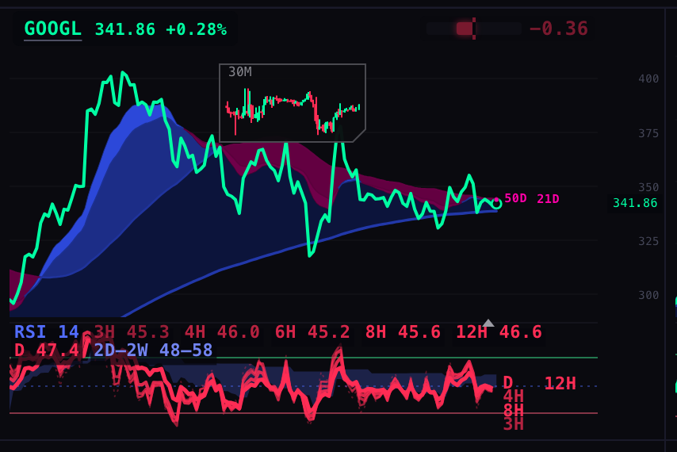
BEFORE (live 80de2d8): green/red lines, a two-row legend over the panel, stacked tags at the right
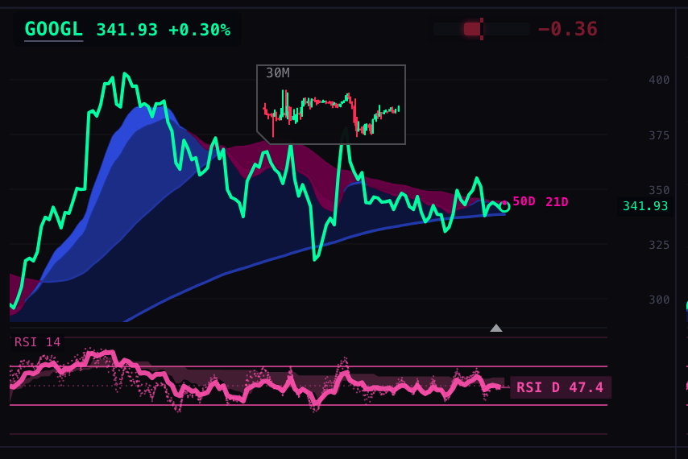
AFTER: pink dotted fan, solid daily, pink cloud, 30/70 guides, "RSI D 47.4" tag at the last value
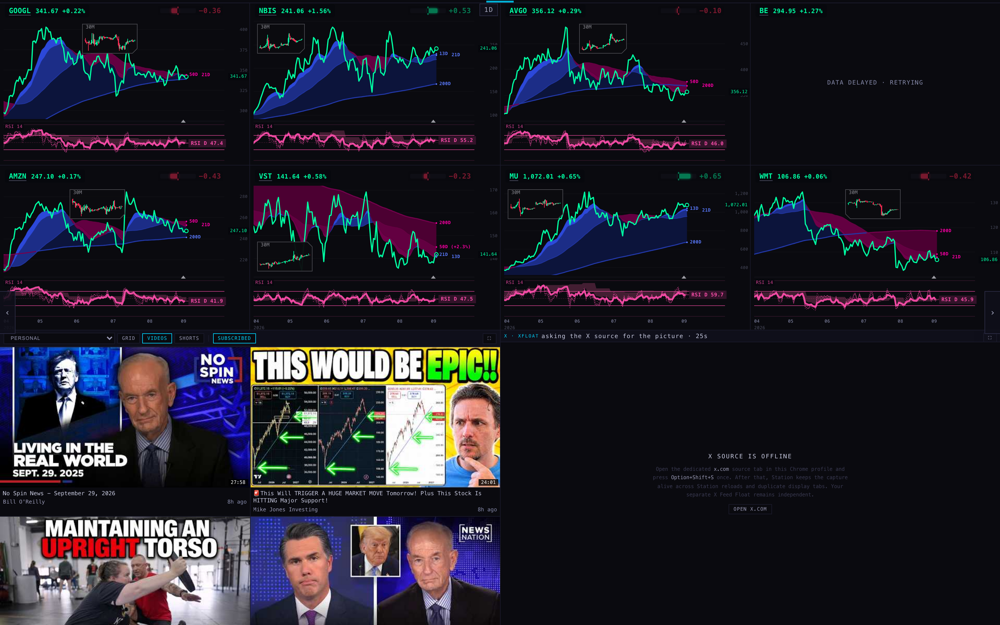
AFTER, whole page at 1680 wide: 7 of 8 panes drawn. BE shows "DATA DELAYED · RETRYING": its price did not load in 26 s, on the old code as well, so it is not caused by this change.
One chart, detailed
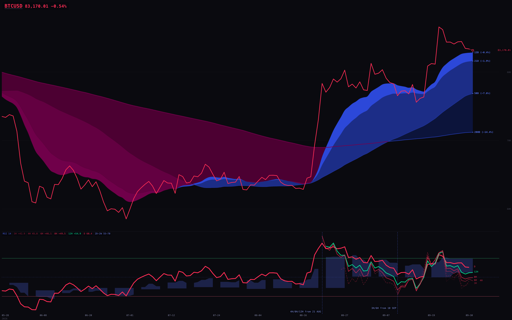
BEFORE: BTCUSD daily
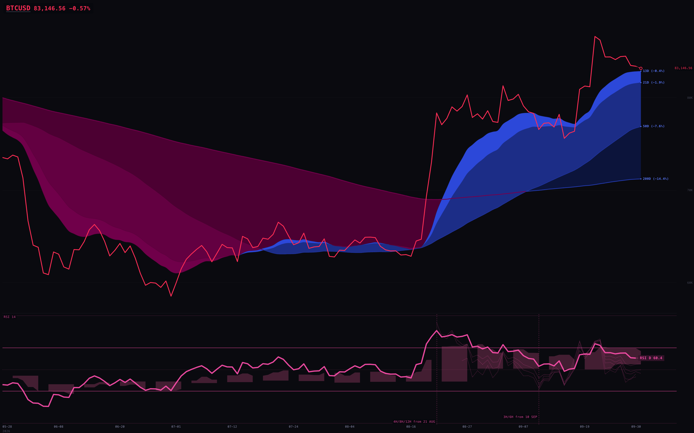
AFTER: BTCUSD daily. The marks "4H/8H/12H from 21 AUG" and "3H/6H from 10 SEP" show where the API's crypto intraday history starts.
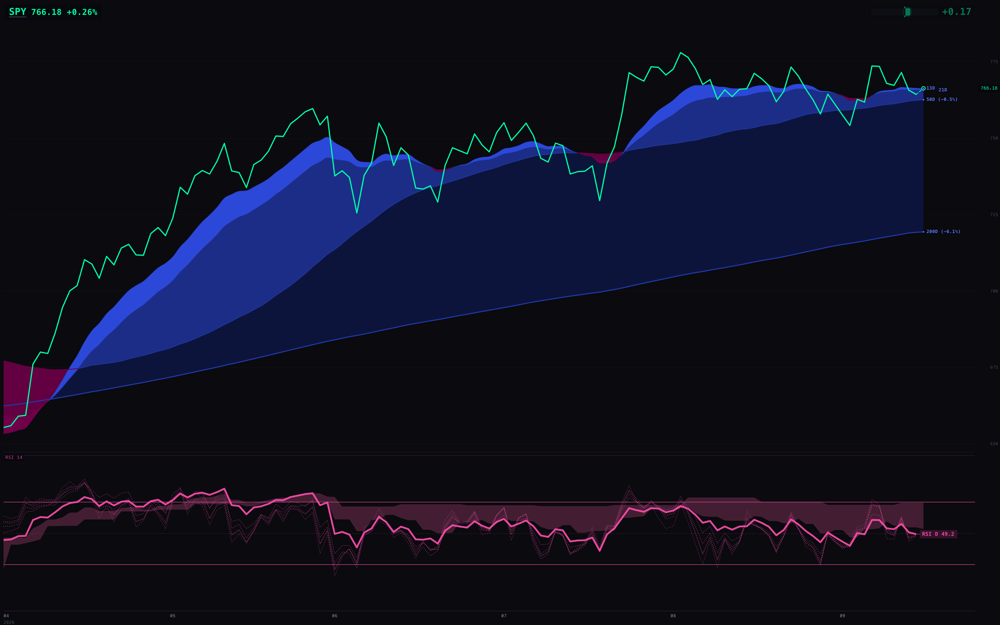
AFTER: SPY daily, RSI D 49.2
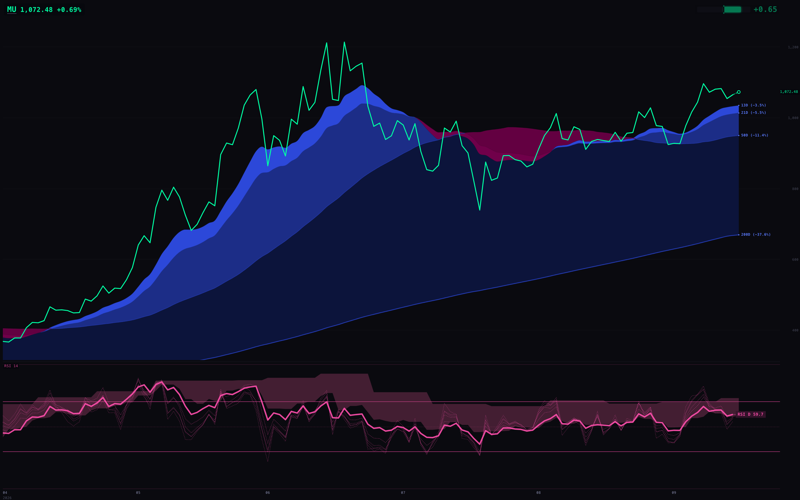
AFTER: MU daily (the equity target), RSI D 59.7
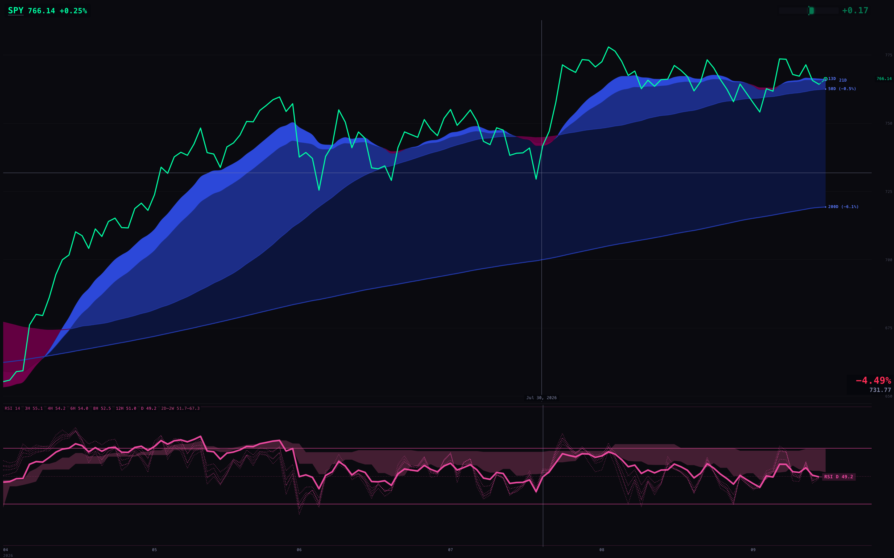
AFTER, hovering on 30 Jul: the time line runs through the RSI panel; the top row reads every timeframe and value
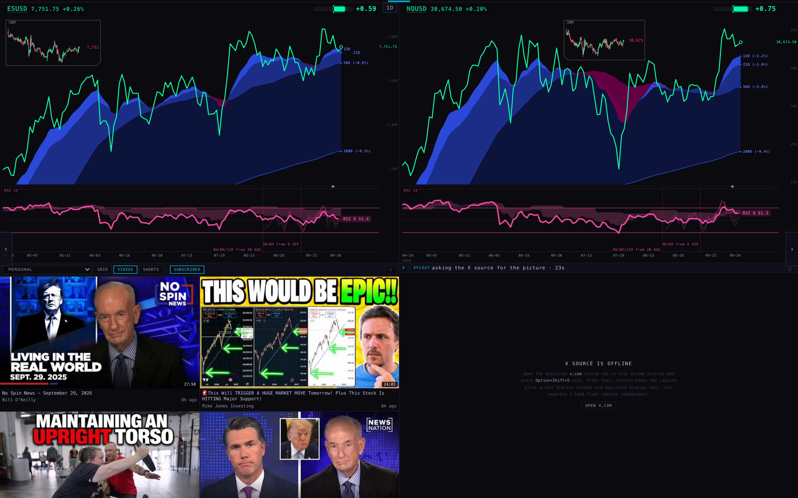
AFTER: SPY + QQQ · DAY (showing ES/NQ outside market hours, as designed)
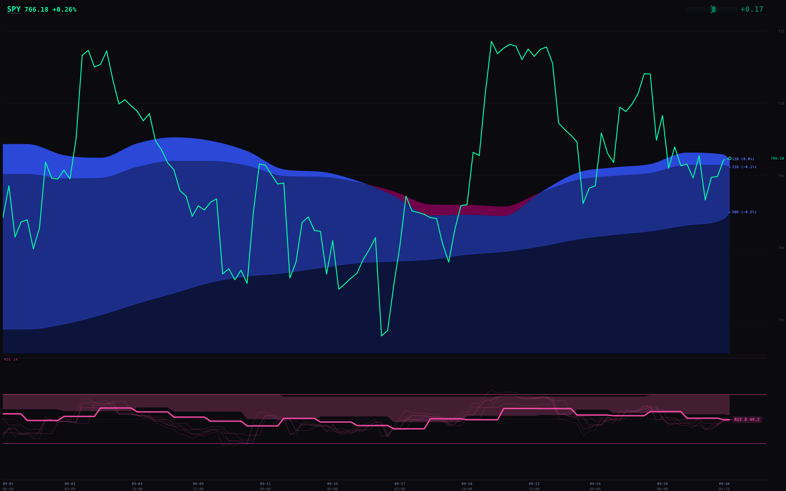
AFTER: SPY at 3H. The daily line steps once a day, and the tag is still 49.2.
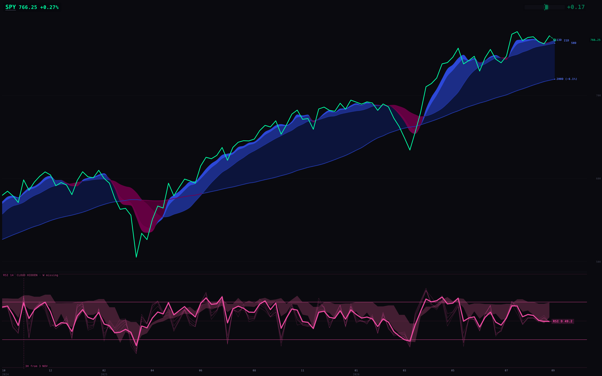
AFTER: SPY weekly. At the current week the cloud stops and the row says "CLOUD HIDDEN · W missing" (the API has not served this week's bar yet).
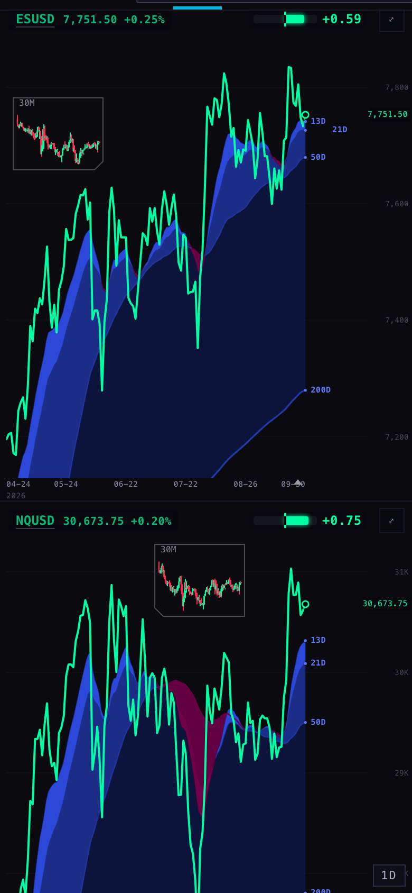
Phone, 390 wide: no RSI panel, the same as before (deck pages hide it on phones)
Where each number comes from, and the check
Nothing about the calculation changed. Every line is Wilder RSI(14) of the close, computed on its own locked timeframe from the chart API (scintilla-massive-chart-api.fly.dev, the Massive bars). 8H is built from pairs of 4H bars. 2D and 2W are built from daily and weekly bars. For BTC, 6H and 12H are built too, because the API does not serve them. The daily line is the same daily read the price clouds use.
For SPY, MU and BTCUSD, a script took each line's newest drawn value and the exact bars the page used. It then:
read the same chart API addresses again and compared every close at every shared timestamp;
recomputed RSI(14) with its own separately written code, at the same source bar.
Ticker
Line
Source bar (UTC)
Drawn
Recomputed
Bars compared with API
SPY
D
29 Sep 04:00
49.2433
49.2433
642 same / 0 different
SPY
3H
29 Sep 22:00
47.8523
47.8523
2,336 / 0
SPY
8H (built from 4H)
29 Sep 20:00
48.5392
48.5392
2,052 / 0
SPY
cloud 2D·3D·W·2W
29 Sep · 27 Sep · 20 Sep · 13 Sep
52.62 – 69.45
52.62 – 69.45
all 0 different
MU
D
29 Sep 04:00
59.6572
59.6572
642 / 0
MU
12H
29 Sep 16:00
60.2851
60.2851
684 / 0
BTCUSD
D
29 Sep 04:00
60.3956
60.3956
600 / 0
BTCUSD
3H
30 Sep 04:00
42.9200
42.9200
241 / 0
All 30 line and cloud values across the three tickers matched exactly; the full list is in value-check-1D.json. Locking: SPY viewed at 3H, daily and weekly gives the same ten values from the same source bars (value-check-lock-SPY.json). Browser checks passed the chart API through a local relay that sends the scintillahub.ai origin, because the API only accepts that origin.
What could be wrong
"Developing" values are limited by the API. The Lab wants the newest bar to show the value still forming. The pane now does this whenever the API serves a forming bar (tested). But the API currently drops unfinished trailing bars: this morning its newest weekly bar was the week of 20 Sep (incomplete_trailing_dropped: 1). In practice, then, the pane shows the last finished value, and the tag says "confirmed". During market hours this was not re-checked.
BTC cloud gaps every Friday. On a 7-day market, the rule that lets a weekly value stand for 5 chart bars leaves each Friday uncovered, so the cloud is hidden there (17 bars in the visible window, always the weekly source). It was the same on live before today. It is a sampling rule, which this pass was told not to change.
Colour rule. The Lab's pink (#FF4FAD) is brighter than the Station's "no channel above 210" rule. I followed the Lab, as you asked.
Compact panes. At 8-up the panel is about 70 px tall. On a fixed 0–100 scale, the lines use its middle third. That is the Lab's choice ("do not waste height on an auto scale"), but it is tighter than the old auto-zoom.
We have not compared these numbers to TradingView's. The Lab says not to claim that without matching inputs.
What I did not do
No push, no deploy; nothing under INDICATOR_LAB/ was read beyond the handoff or written.
No change to the RSI arithmetic, the price clouds, the Geiger, Williams/Stochastic or the page layouts and rotation.
No confirmed-only option (the Lab lists it as optional).
No check during market hours. BE's price did not load in the 8-up run.
Tests
node --test tests/: 894 tests, 875 pass, 18 fail. These are the same 18 that fail on live (inventory, video, iPad and badge tests, none about the RSI). 18 new tests are in tests/station-rsi-only-20260929.test.mjs. They cover the line table, the cloud's min/max and hiding on a missing source, the fixed scale, where the tag and connector sit, developing values, and the drawing order replayed on a recording canvas. Two 28 Sep tests that fixed the old green/red look were rewritten for the Lab's spec.
Harness: harness/shots.mjs, harness/value-check.mjs, harness/cloud-gaps.mjs (headless, shared rig from S1).